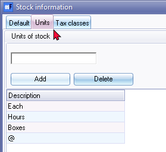

Units
What is units relating to stock items / inventory items and products?
In the context of stock items or inventory items, "units" refers to the quantity or measurement used to quantify and track the physical count of those items. It represents the individual items or the smallest discrete units in which the stock is measured, purchased, and sold.
The term "units" can vary depending on the nature of the stock items or products. It could refer to items like pieces, boxes, cartons, bottles, kilograms, litres, meters, or any other appropriate unit of measurement based on the characteristics of the items being tracked. The choice of units depends on the specific industry, product type, and standard practices within that particular business or market.
For example, in a retail store, units could represent individual items such as a single shirt, a pack of batteries, or a case of soft drinks. In a manufacturing setting, units might refer to components or sub-assemblies used in the production process. The choice of units allows for accurate inventory management, pricing, and tracking of stock levels.
Examples of Units
What is common examples of Units for stock items in which stock items are purchased and sold?
Common examples of units or unit sizes for stock items in which stock items are purchased and sold can include:
- Pieces or Units: This is the most basic unit of measurement and refers to individual items or products.
- Boxes or Cartons: Stock items may be packaged in boxes or cartons containing a specific quantity of units.
- Pallets: In the case of bulk products or larger items, stock items may be measured and sold by the pallet.
- Gallons or Litres: For liquids or fluids, units of measurement can include gallons or litres.
- Pounds or Kilograms: Weight-based units such as pounds or kilograms are commonly used for items sold by weight.
- Yards or Meters: Length-based units like yards or meters are relevant for products sold by length or size.
- Cases: Some items are sold in cases, which typically contain a predetermined number of units.
These are just a few examples, and the units or unit sizes used for stock items can vary depending on the nature of the products and the industry in which they are being bought and sold.
What is common examples of Units for non-physical items in which stock items are purchased and sold?
When it comes to non-physical items or intangible goods that are purchased and sold, there are various units or unit sizes that can be used to measure them. Here are some common examples:
- Licenses: Units of measurement for software licenses or intellectual property rights can include "User Licenses," "Seat Licenses," "Site Licenses," or "Enterprise Licenses." These units represent the number of users or locations covered by the license.
- Subscriptions: For subscription-based services or digital content, units such as "Monthly Subscriptions," "Annual Subscriptions," or "Tiered Subscriptions" are often used. These units indicate the duration or level of access to the service or content.
- Data Usage: In the telecommunications or internet service provider industry, units like "Data Volume" or "Data Units" are used to measure the amount of data consumed or allocated.
- Consulting Services: Units can be used to measure consulting services, such as "Consulting Hours," "Consulting Sessions," or "Project Engagements." These units represent the time or sessions dedicated to providing consulting expertise.
- Digital Downloads: For digital products like e-books, music tracks, or video files, units such as "Downloads," "Songs," or "Video Views" can be used to quantify the number of times the item is accessed or downloaded.
- Virtual Currency: In virtual economies or online gaming, units like "Virtual Coins," "Points," or "Credits" are used to represent the currency used within the system.
These examples illustrate how units or unit sizes can be applied to non-physical items to facilitate their purchase and sale, taking into account the specific nature and characteristics of each product or service.
Labour - Is hours also used as a unit of measurement?
Hours can be used as a unit of measurement or unit size when it comes to labour. In certain industries or businesses where labour is billed or tracked based on time, hours can be used to quantify the amount of work or effort put into a particular task or project. For example, in consulting firms, freelance work, or service-based businesses, the unit of measurement for labour may be hours. It allows for accurate tracking, billing, and estimation of labour costs and efforts.
Each and Hours is that also used for products?
Units such as "Each" and "Hours" are typically not used as units of measurement for physical products themselves, but they can be associated with certain aspects related to the products.
- "Each" is often used as a generic unit when the quantity or unit of measurement is not specified or when dealing with individual items. For example, when selling miscellaneous or unique items where each item is different, the unit may be labelled as "Each" to indicate that it refers to one item without specifying a specific measurement.
- "Hours" is commonly used to measure the duration or time spent on a service or labour-related task rather than a physical product. For example, in industries such as consulting, maintenance, or professional services, the unit of measurement for billing purposes may be "Hours" to reflect the time spent providing the service.
So, while "Each" and "Hours" are not typically used to measure physical products directly, they can have relevance in certain contexts related to products, such as specifying quantities or measuring service-related aspects.
Add unit descriptions
In osFinancials you can add unit descriptions to manage the stock items / inventory items or products you purchase and sell. When creating or editing stock items (Stock items on the Default ribbon) you can assign these units to specific stock items / inventory items or products. These unit descriptions will be printed in some reports as well as in document layout files for sales documents (i.e. quotes, invoices, credit notes and delivery notes) for purchase documents (i.e. orders, purchases and supplier returns).
To add unit descriptions:
- On the Setup ribbon, select Setup → Stock information. Navigate to the Units tab.

- Enter the Units of stock / product description.
- Click on the Add button. The Description will be added to the list.
- Click on the OK button to exit the "Stock information" screen.
By managing unit descriptions in osFinancials, you can ensure accurate representation of stock units in reports and documents, facilitating effective inventory management and sales transactions.
Delete unit descriptions
If you want to delete a unit description, you can click on the Delete button. A confirmation message will be displayed:
"Are you sure ?"
If you are not sure, click on the No button.
If you click on the Yes button, the unit description will permanently be removed from the list.
This will affect all reports and printing or reprinting of layout files supporting unit size descriptions. This deletion will impact reports and the printing or reprinting of layout files that use the unit descriptions.
|
|
If you accidentally delete a unit description and want to restore it, you need to follow these steps:
Note that already posted documents will not include the unit size descriptions. To print the unit size on unposted documents, you need to edit the documents and reselect the stock item. |

Units on document layout files
The Unit size will be displayed on the Default → Stock items, Reports → Stock items and on the following layout files:
Added the Unit Description to the following Layout files:
- Tutorial-Invoice
- Layout file - (TRN_1910)
- Document layout (15 codes) - (TRN_906277)
- Delivery note - (TRN_1313)
|
|
You may add the unit description to your own layout files. See - Reportman - Add Unit Descriptions to Layout files. |